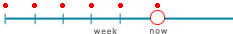
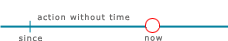
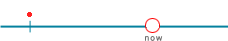
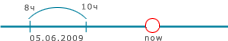

Present Indefinit Tense
Формула
V(i)
Verb (1я форма)
V(i)+"s"
для 3го лица (he, she, it)
Verb (1я форма) + постфикс "s"
Verb (1я форма) + постфикс "s"
Применение

- Периодически происходящие события (привычка)
Наречия: always, sometimes. often, never, usually - Факт, который всега правдив.
Мы родом из Испании, т.е уж если родился там, то это навсегда - Факт, являющийся правдой долгое время
Present Continuous Tense
Формула
to be +V(i) + ing
глагол to be + Verb (1я форма глагола) + постфикс "ing"
Применение

- Действие, которое происходит в данный момент (он играет в футбол)
- Сейчас, но не в момент разговора (она изучает математику в училище)
- План ближайшего будущего (она начнет заниматься на следующей неделе)
Present Perfect Tense
Формула
to have +V(iii)
глагол to have + Verb (3я форма глагола)
Применение

- ФАКТ. Интерес к случаям в чьей-то жизни (прошедшие события). (Я много путешествовал по Африке)
Наречия: never, already, just, ever, yet, latly - ПЕРИОД. Действие и состояние, к-рое началось в прошлом и продолжаеться. (Я знаю Анну с 6 лет).
Наречия: for since
Характерные вопросы
How long. В этом времени никогда не употребляеться вопрос When.
Past Indefinit Tense
Формула
V(ii)
Verb (2я форма)
Применение

- Событие в прошлом
Наречия: last, from, to, ago - События в истории , следующие один за другим. (Рассказ)
- Факт, являющийся правдой долгое время
Past Continuous Tense
Формула
to be +V(i) + ing
глагол to be (в прошедшем времени) + Verb (1я форма глагола) + постфикс "ing"
Применение

- Происходящее в прошлом в определенный период времени.
Наречия: from, to, while
Future Indefinit Tense
Формула
will + V(i)
will + Verb (1я форма)
Применение

- При принятии какого-либо решения в момент раговора (спонтанное решение)
'Did you phone Ann?' 'Oh, no, I forgot. I will do it now.' - Когда мы говорим о предположениях, что-то произойдет по нашему мнению
'Don't worry, Tom. You will pass your examination.'